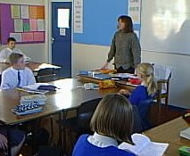
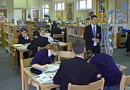
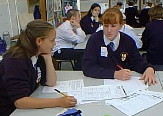
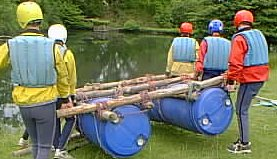
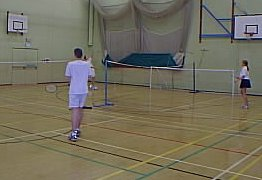

Charters School is highly regarded by pupils and parents alike as providing an excellent
atmosphere for learning for all it's pupils. It is a leading provider of 11-19 education
and has achieved national recognition for the quality of education that it provides.
|
Educational success is valued in relation to each individual and a key emphasis is on the achievement of potential. This is supported by a determination to provide the best teachers and a highly developed system of tutoring. Attention is paid to the specific needs of each pupil and ensuring that they make good progress from entry to the school until they leave us. It is our aim that most pupils will remain with us after their GCSE exams and enter our highly successful Sixth Form. |
 |
|  |
Well-resourced classrooms and specialist areas for practical activities help to ensure that pupils have access to modern technology to support their learning. The Library is a main focus of academic life and most pupils benefit from the extensive stock of books and research materials. Sporting facilities are extensive and are provided in conjunction with the local community. |
|
On entry to the school each pupils is placed in a mixed ability tutor group. Their Tutor is responsible for the guidance and welfare of all pupils in their group, who they meet at the start and the end of each day. Continuity of support is maintained as the Tutor remains with the pupils until the end of their GCSE exams. In order to ease the transition from primary to secondary school there is a specialist Head of Year 7 responsible for the first year in school. The pupils are then passed into the care of another Head of Year who will remain in overall charge of the year group until they finish their compulsory schooling. |
 |
|  |
All pupils also have the opportunity to take part in a wide variety of visits and trips, all with a clear educational purpose. These range from trips to Tirabad, our residential educational centre in Wales, to the annual GNVQ trip to visit business enterprises in France. |
|
There is also a wide variety of clubs and activities that are available to pupils on a weekly basis at the end of the school day. A large number of House and Inter-School sporting fixtures mean that there is always something going on. In recognition of this the school has recently been presented with three major awards: The Schools Curriculum Award, The Sportsmark Award and Education Extra. At Charters the key emphasis is on directed learning but we also try to develop the whole person. |
 |
A distinctive feature of Charters School is the way in which it has been adapted to give access to pupils with physical impairment. This resource is fully supported by additional staff.
The School has an open policy towards parents who we hope will be partners with us in ensuring that their children get the best possible start in life. Parents are kept informed of progress by a system of regular parent's evenings and formal reports. They can also expect to see pupil's achievements and work recorded in their "Record Book". A very strong and active Charters School Association exists involving parents, pupils, school staff and the local community. Parents are kept informed of school events and important dates through the regular newsletter "Charters News".